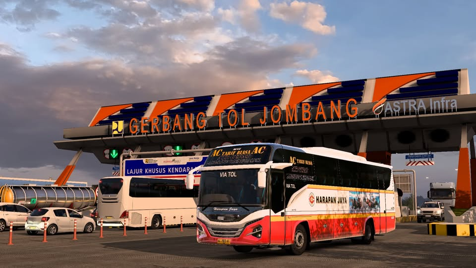

STORY OF THIS PROJECT
Berawal dari kegemaran mengeksplorasi simulator transportasi Euro Truck Simulator 2, muncul ketertarikan mendalam untuk menghadirkan rute-rute lokal khas Indonesia. Projek mod Map ATB Raya ini dirancang untuk merekonstruksi jalur lintas Jawa Timur dengan detail dan atmosfer yang autentik.

Sebelum Map ATB Raya, nama awal dari mod map ini adalah Surabaya Raya Map, yang dimana target jalur yang akan dibuat adalah wilayah Surabaya Raya yaitu Gresik-Surabaya-Sidoarjo yang setiap daerahnya memiliki landmark masing-masing.
Titik balik pun tiba ketika versi Beta dirilis secara terbatas. Antusiasme komunitas meledak di luar dugaan. Puncaknya adalah saat "Mbah Purnomo", YouTuber ETS2 paling berpengaruh di Indonesia, mereview mod ini hingga disaksikan lebih dari 300 ribu kali. Lonjakan apresiasi itu menjadi bahan bakar baru; sebuah momentum yang memaksa untuk menyelam lebih dalam ke dunia modding, khususnya 3D modelling.
Bermodal video tutorial YouTube dan keberanian untuk terus bertanya kepada para senior di komunitas, proses belajar pun dimulai dari nol. Langkah awal diayunkan dengan membuat model 3D sederhana—seperti Monumen Tugu—hingga memahami rumitnya proses konversi agar aset tersebut bisa tampil sempurna di dalam game.

Kini, projek sederhana itu telah bertransformasi menjadi Map ATB Raya. Jalurnya tidak lagi sekadar berputar di Surabaya, melainkan sudah membentang jauh menembus Malang hingga Tulungagung. Keberhasilan ini bukanlah hasil kerja tunggal. Ketika kesibukan bangku perkuliahan mulai menyita waktu dan perhatian, tangan-tangan suportif dari teman-teman komunitas datang mengulurkan bantuan, bahu-membahu meneruskan sisa jalur hingga target besar ini akhirnya bisa terwujud.
TOOLS USED FOR THIS PROJECT
3D MODEL IN THIS PROJECT
Mari kita bangun sesuatu yang luar biasa bersama
Terbuka untuk kesempatan magang, project freelance atau kolaborasi riset.